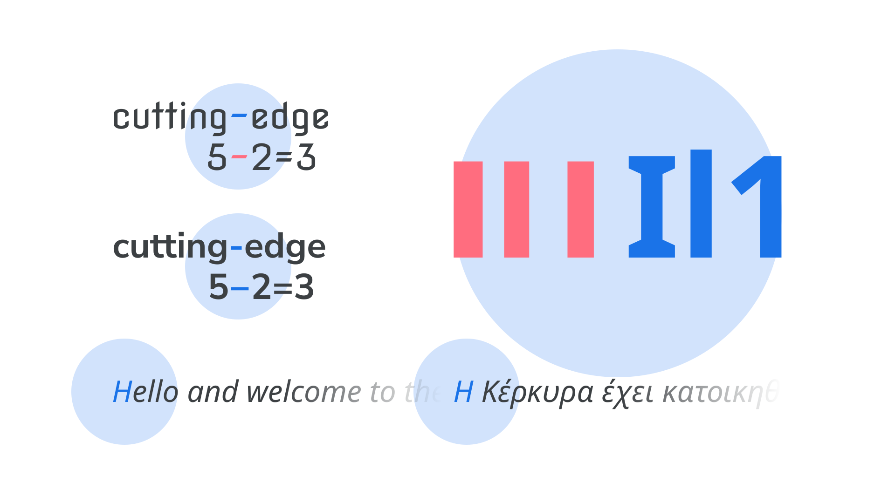

Homoglyph
By Google Fonts Knowledge contributors · Google Fonts Knowledge.
Original article · Source on GitHub · CC BY-SA 4.0. Text, illustrations and existing credits reproduced from the licensed Knowledge repository. Open Shelf adapted the layout and links; these adaptations are also CC BY-SA 4.0. No endorsement implied.
A homoglyph is a glyph with a design that can appear indistinguishable from—or least very similar to—another glyph with a separate meaning.
An uppercase I, lowercase l, and numeral 1 can appear near-identical in some typefaces, which presents a legibility problem. If the wrong character is used, it can confuse screen reading software and cause potential issues with searching and sorting. In some typefaces, there can be too subtle a distinction between different dashes and the minus character.

Homoglyphs also manifest themselves across different languages and/or scripts. An “H” glyph in English is not the same, semantically, as the look-alike “H” glyph (for the “eta” character) in Greek, for instance. This isn’t a problem in print, but is an issue for any on-screen type, which is subject to being copied and pasted, and read aloud by screen reading software.
Max Halford has written more on this topic on Homoglyphs: different characters that look identical.